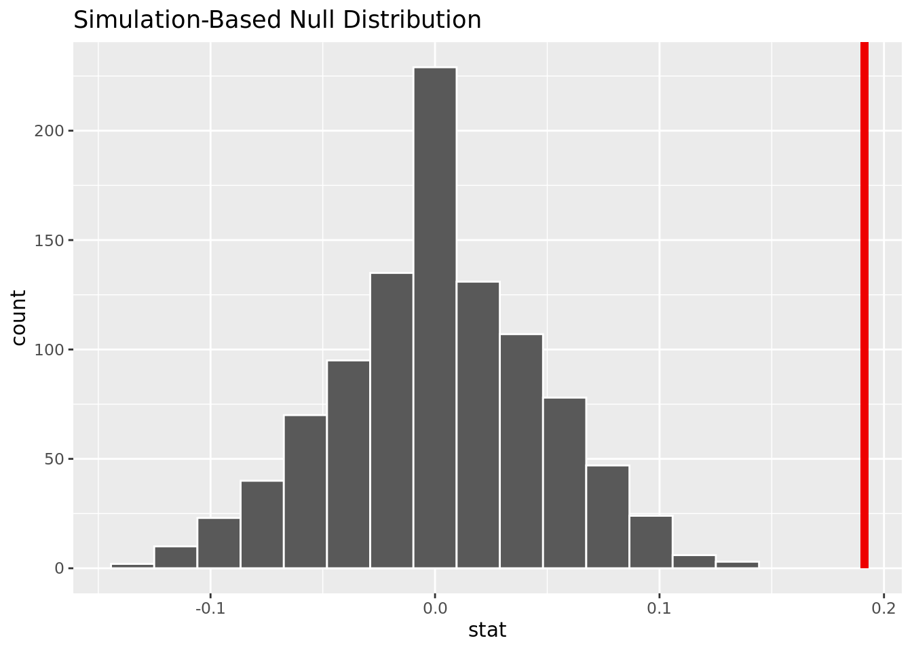
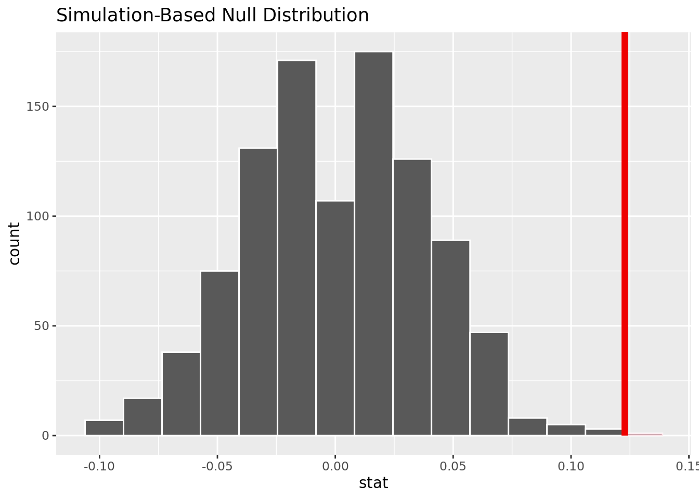
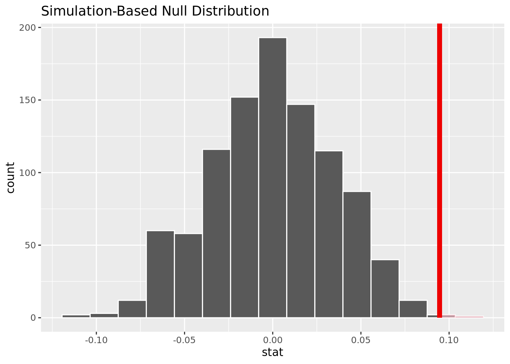

── Attaching packages ─────────────────────────────────────── tidyverse 1.3.2 ──
✔ ggplot2 3.4.0 ✔ purrr 1.0.0
✔ tibble 3.1.8 ✔ dplyr 1.0.10
✔ tidyr 1.2.1 ✔ stringr 1.5.0
✔ readr 2.1.3 ✔ forcats 0.5.2
── Conflicts ────────────────────────────────────────── tidyverse_conflicts() ──
✖ dplyr::filter() masks stats::filter()
✖ dplyr::lag() masks stats::lag()
── Attaching packages ────────────────────────────────────── tidymodels 1.0.0 ──
✔ broom 1.0.2 ✔ rsample 1.1.1
✔ dials 1.1.0 ✔ tune 1.0.1
✔ infer 1.0.4 ✔ workflows 1.1.2
✔ modeldata 1.0.1 ✔ workflowsets 1.0.0
✔ parsnip 1.0.3 ✔ yardstick 1.1.0
✔ recipes 1.0.3
── Conflicts ───────────────────────────────────────── tidymodels_conflicts() ──
✖ scales::discard() masks purrr::discard()
✖ dplyr::filter() masks stats::filter()
✖ recipes::fixed() masks stringr::fixed()
✖ dplyr::lag() masks stats::lag()
✖ yardstick::spec() masks readr::spec()
✖ recipes::step() masks stats::step()
• Learn how to get started at https://www.tidymodels.org/start/Heart Disease Analysis
Report
Introduction and data
The topic we chose to assess is: How does heart disease presence vary based on the age, sex, cholesterol, blood sugar, and blood pressure? Furthermore, what variables are the best predictor of whether or not an individual will get heart disease? We chose to research this topic to explore what variables affect the prevalence of heart disease using data from patients in Cleveland, Hungary, Switzerland, and the VA Long Beach. We hope that by examining the correlation between these variables and presence of heart disease, we can gain insight into how/to what extent these variables contribute to a heart disease diagnosis. Understanding what leads to heart disease is incredibly important as it affects hundreds of thousands of people across the world. It can come in many different shapes and forms, such as coronary artery disease, heart failure, and heart valve disorders. According to the CDC, heart disease is responsible for around 1 every 5 deaths which is why it is critical to understand the responsibility of underlying factors.
We hypothesize that firstly, the older an individual is, the higher cholesterol, blood sugar, and blood pressure and individual has, the more likely they are to develop a heart disease of large magnitude. Secondly, we hypothesize that the age, sex, cholesterol, blood sugar, blood pressure, and the number of major vessels are the best predictors of whether or not an individual will develop heart disease.
We do acknowledge the potential ethical concerns of this research, with the main concern being results communication, specifically that we accurately represent our results. If we misinterpret/misrepresent our results unintentionally, it could be concerning, especially given the topic of our research. Ways to prevent this ethical concern is by formulating research questions in a way that tries to find out the truth rather than proving a viewpoint, by including data outliers that may not fit with our hypothesis, and more.
We found the data set on kaggle, but the data was initially collected by the Hungarian Institute of Cardiology, and the Cleveland Clinic Foundation. This synthesis of information was donated to the University of California at Irvine’s Machine learning Repository in 1988. Some relevant variables include:
- age: (Age of the patient in years
- dataset: (place of study)
- sex: (Male/Female)
- cp: chest pain type ([typical angina, atypical angina, non-anginal, asymptomatic])
- trestbps: resting blood pressure (resting blood pressure (in mm Hg on admission to the hospital))
- chol: (serum cholesterol in mg/dl)
- fbs: (if fasting blood sugar > 150 mg/dl)
- restecg: (resting electrocardiographic results)
-- Values: [normal, stt abnormality, lv hypertrophy] - thalach: maximum heart rate achieved
- exang: exercise-induced angina (True/ False)
- oldpeak: ST depression induced by exercise relative to rest
- slope: the slope of the peak exercise ST segment
- ca: number of major vessels (0-3) colored by fluoroscopy
- thal: [normal; fixed defect; reversible defect]
- num: the predicted attribute 0 means no heart disease, and 1-4 is the degree to which they have it. In this case, 1-4 will be classified as 1, as we are not concerned with the degree to which they have heart disease, just that they have it.
The data is cleaned by altering the variable num to be 0 if the patient has no heart disease and 1 if the patient has heart disease of any degree (1-4). We chose this format because we were interested in exploring only the predictors of having heart disease, and not the predictors of its severity. For individual logistic regressions and hypothesis testing, we filter cholesterol != 0 when using cholesterol as an explanatory variable and bp != 0 when using blood pressure as an explanatory variable because humans do not have 0 cholesterol or blood pressure so we assume this is due to lack of data and not actual observation. We also filter out NA data for blood pressure and blood sugar when using that variable in a hypothesis test because NA values are not applicable in our hypothesis tests.
Literature Review
Citation:
“Prevalence and Trends of Coronary Heart Disease in the United States, 2011 to 2018” Yi-Ting Hana Lee, MPH; Jing Fang, MD, MS; Linda Schieb, MSPH; et al.
https://jamanetwork.com/journals/jamacardiology/fullarticle/2787707
Summary:
This article provided a broad overview of recent trends in coronary heart disease (CHD) in the United States from 2011-2018. This study relied on self-reported data from patients. Overall there was a minor decrease in the prevalence of CHD in the United States among all demographics. Between 2011 and 2018, the rate dropped from 6.2% to 6.0%. There were plenty of geographic and demographic differences and trends that are worth noting. First, there were some declines in adults over 65, college graduates, and residents of Utah. However, the prevalence of CHD rose in areas like Oregon and in adults 18-44.
The data we have focuses more on the health aspects of heart disease, while the study looks at broad trends in demographics and geography. Being able to break down and group the data by patient information like race and age is helpful; our dataset has some of these demographic identifiers, but more of them could help our analysis.
Methodology
Rows: 920 Columns: 16
── Column specification ────────────────────────────────────────────────────────
Delimiter: ","
chr (6): sex, dataset, cp, restecg, slope, thal
dbl (8): id, age, trestbps, chol, thalch, oldpeak, ca, num
lgl (2): fbs, exang
ℹ Use `spec()` to retrieve the full column specification for this data.
ℹ Specify the column types or set `show_col_types = FALSE` to quiet this message.Rows: 920
Columns: 16
$ id <dbl> 1, 2, 3, 4, 5, 6, 7, 8, 9, 10, 11, 12, 13, 14, 15, 16, 17, 18…
$ age <dbl> 63, 67, 67, 37, 41, 56, 62, 57, 63, 53, 57, 56, 56, 44, 52, 5…
$ sex <chr> "Male", "Male", "Male", "Male", "Female", "Male", "Female", "…
$ dataset <chr> "Cleveland", "Cleveland", "Cleveland", "Cleveland", "Clevelan…
$ cp <chr> "typical angina", "asymptomatic", "asymptomatic", "non-angina…
$ trestbps <dbl> 145, 160, 120, 130, 130, 120, 140, 120, 130, 140, 140, 140, 1…
$ chol <dbl> 233, 286, 229, 250, 204, 236, 268, 354, 254, 203, 192, 294, 2…
$ fbs <lgl> TRUE, FALSE, FALSE, FALSE, FALSE, FALSE, FALSE, FALSE, FALSE,…
$ restecg <chr> "lv hypertrophy", "lv hypertrophy", "lv hypertrophy", "normal…
$ thalch <dbl> 150, 108, 129, 187, 172, 178, 160, 163, 147, 155, 148, 153, 1…
$ exang <lgl> FALSE, TRUE, TRUE, FALSE, FALSE, FALSE, FALSE, TRUE, FALSE, T…
$ oldpeak <dbl> 2.3, 1.5, 2.6, 3.5, 1.4, 0.8, 3.6, 0.6, 1.4, 3.1, 0.4, 1.3, 0…
$ slope <chr> "downsloping", "flat", "flat", "downsloping", "upsloping", "u…
$ ca <dbl> 0, 3, 2, 0, 0, 0, 2, 0, 1, 0, 0, 0, 1, 0, 0, 0, 0, 0, 0, 0, 0…
$ thal <chr> "fixed defect", "normal", "reversable defect", "normal", "nor…
$ num <dbl> 0, 2, 1, 0, 0, 0, 3, 0, 2, 1, 0, 0, 2, 0, 0, 0, 1, 0, 0, 0, 0…

As age increases, the proportion of people with heart disease increases.

As cholesterol increases, heart disease rates increase. We filtered out entries with chol = 0 because that is not possible.

People with fasting blood sugar above 150 are more likely to have heart disease than those with fbs below 150.
Warning: Removed 2 rows containing missing values (`geom_bar()`).
For females, as blood pressure increases past about 115, higher bp is correlated with higher rates of heart disease. Below 115, lower bp is correlated with higher rates of heart disease. For males, There is not as strong a correlation between blood pressure and heart disease rates. We filtered would bp = 0 because that is not possible and a filler of not recorded data. We chose to facet this by gender because men and women have different average blood pressures.
Statistical Procedure:
We use logistic regressions because we are examining whether or not individuals have heart disease, which is a categorical variable that we must convert to a factor in our data transformation. We filtered out data of cholesterol = 0 and blood pressure = 0 for regressions involving those variables because it is not possible for a living individual and is likely to do data not being collected or a null value, as opposed to the actual value. We chose these variables and interactions because we wanted a large breadth of variables potentially correlating with heart disease. Based on the EDA, we predicted key interactions and then wanted to see how these interactions we predicted to be important, such as bp and sex, cholesterol and age, blood sugar and age, and cholesterol and sex, predicted heart disease. We used AIC to find the best model and chose the two logistic regressions with the lowest AIC values. For the hypothesis test, we wanted to determine if males and females had different rates of heart disease, as suggested in our EDA, so we conducted a two sided hypothesis test. This relates to our research question as we are exploring the factors correlating to heart disease, including sex. We also wanted to determine if those over certain ages, blood sugar, cholesterol, and blood pressure had higher rates of heart disease, as we predicted in our hypothesis, so we conducted a one sided hypothesis test on these topics at cutoffs we determined from our EDA. We used bootstrapping simulation for the hypothesis testing because we were comparing proportions, not means, and CLT is only used for means. Additionally, bootstrapping provides a visualization of the data we used for explanation.
[1] 1180.484[1] 1193[1] 988.2217[1] 1135.806[1] 1090.006[1] 926.4628[1] 1071.592[1] 919.4695# A tibble: 3 × 5
term estimate std.error statistic p.value
<chr> <dbl> <dbl> <dbl> <dbl>
1 (Intercept) -2.76 0.429 -6.44 1.17e-10
2 chol 0.00586 0.00145 4.04 5.30e- 5
3 sexMale 1.60 0.206 7.77 7.63e-15# A tibble: 4 × 5
term estimate std.error statistic p.value
<chr> <dbl> <dbl> <dbl> <dbl>
1 (Intercept) -9.54 2.16 -4.42 0.00000992
2 chol 0.0243 0.00842 2.89 0.00388
3 age 0.162 0.0399 4.06 0.0000485
4 chol:age -0.000392 0.000155 -2.52 0.0116 The best predictor of heart disease rates is an additive model of cholesterol and and sex because it has the lowest AIC of 919. The second best predictor is an interactive model of cholesterol and age, with an AIC of 926. The worst predictor of hearth disease rates is age, with an AIC of 1193.
Best Model (chol + sex):
\(log(\hat{p} / (1-\hat{p})) = -2.76 + .006 * chol + 1.6 * sex\)
where \(\hat{p}\) is the probability of heart disease and sex = 1 if male and sex = 0 if female.
Second Best Model (chol * age)
\(log(\hat{p} / (1-\hat{p})) = -9.54 + .024*chol + .162*age - .0004 * chol * age\)
where \(\hat{p}\) is the probability of heart disease.
Hypothesis Test 1:
Null hypothesis: The true proportion of males (m) with heart disease is the same as the true proportion of females (f) with heart disease.
Alternate hypothesis: The true proportion of males with heart disease is not the same as the true proportion of females with heart disease.
\(H_0: \pi_m - \pi_f = 0\) \(H_a: \pi_m - \pi_f \neq 0\)
`summarise()` has grouped output by 'sex'. You can override using the `.groups`
argument.# A tibble: 4 × 3
# Groups: sex [2]
sex num p
<chr> <fct> <int>
1 Female 0 144
2 Female 1 50
3 Male 0 267
4 Male 1 459[1] 0.3744994The observed difference in proportion is .3744994.
Warning: Please be cautious in reporting a p-value of 0. This result is an
approximation based on the number of `reps` chosen in the `generate()` step. See
`?get_p_value()` for more information.# A tibble: 1 × 1
p_value
<dbl>
1 0The p-value is close to 0, meaning it will be smaller than an alpha of .05. We reject the null hypothesis, and there is strong evidence to conclude that the proportion of men and women who get heart disease are not the same.

This visualization shows that based on the simulation, it is unlikely it is unlikely to have our observed difference in proportion given no difference of heart disease rate for men and women.
Hypothesis Test 2:
Null hypothesis: The true proportion of people over 50 (over) with heart disease is the same as the true proportion of those 50 and under (under) with heart disease.
Alternate hypothesis: The true proportion of people over 50 with heart disease is greater than the true proportion of those 50 and under with heart disease.
\(H_0: \pi_{over} - \pi_{under} = 0\) \(H_a: \pi_{over} - \pi_{under} > 0\)
`summarise()` has grouped output by 'over_50'. You can override using the
`.groups` argument.# A tibble: 4 × 3
# Groups: over_50 [2]
over_50 num x
<chr> <fct> <int>
1 No 0 192
2 No 1 125
3 Yes 0 219
4 Yes 1 384[1] 0.2424942The observed difference in proportion is .2424942.
Warning: Please be cautious in reporting a p-value of 0. This result is an
approximation based on the number of `reps` chosen in the `generate()` step. See
`?get_p_value()` for more information.# A tibble: 1 × 1
p_value
<dbl>
1 0The p-value is close to 0, meaning it will be smaller than an alpha of .05. We reject the null hypothesis, and there is strong evidence to conclude that the proportion of people over 50 who get heart disease is greater than the proportion of people 50 and under who get heart disease.
Warning in min(diff(unique_loc)): no non-missing arguments to min; returning Inf
This visualization shows that based on the simulation, it is unlikely to have our observed difference in proportion given no difference of heart disease rates for those over 50 and under 50.
Hypothesis Test 3:
Null hypothesis: The true proportion of people with fasting blood sugar over 150 mg/dl (over) with heart disease is the same as the true proportion of those with fasting blood sugar under 150 mg/dl (under) with heart disease.
Alternate hypothesis: The true proportion of people with fasting blood sugar over 150 mg/dl (over) with heart disease is greater than the true proportion of those with fasting blood sugar under 150 mg/dl (under) with heart disease.
\(H_0: \pi_{over} - \pi_{under} = 0\) \(H_a: \pi_{over} - \pi_{under} > 0\)
`summarise()` has grouped output by 'fbs'. You can override using the `.groups`
argument.# A tibble: 4 × 3
# Groups: fbs [2]
fbs num x
<lgl> <fct> <int>
1 FALSE 0 353
2 FALSE 1 339
3 TRUE 0 44
4 TRUE 1 94[1] 0.191275The observed difference in proportion is 0.191275.
Warning: Please be cautious in reporting a p-value of 0. This result is an
approximation based on the number of `reps` chosen in the `generate()` step. See
`?get_p_value()` for more information.# A tibble: 1 × 1
p_value
<dbl>
1 0The p-value is close to 0, meaning it will be smaller than an alpha of .05. We reject the null hypothesis, and there is strong evidence to conclude that the proportion of people with fbs over 150 mg/dl who get heart disease is greater than the proportion of people with fbs under 150 mg/dl who get heart disease.
Warning in min(diff(unique_loc)): no non-missing arguments to min; returning Inf
This visualization shows that based on the simulation, it is unlikely to have our observed difference in proportion given no difference of heart disease rates in those with fbs over and under 150 mg/dl.
Hypothesis Test 4:
Null hypothesis: The true proportion of people with cholesterol over 250 mg/dl (over) with heart disease is the same as the true proportion of those with cholesterol under 250 mg/dl (under) with heart disease.
Alternate hypothesis: The true proportion of people with cholesterol over 250 mg/dl with heart disease is greater than the true proportion of those with cholesterol under 250 mg/dl with heart disease.
\(H_0: \pi_{over} - \pi_{under} = 0\) \(H_a: \pi_{over} - \pi_{under} > 0\)
`summarise()` has grouped output by 'over_250'. You can override using the
`.groups` argument.# A tibble: 4 × 3
# Groups: over_250 [2]
over_250 num x
<chr> <fct> <int>
1 No 0 237
2 No 1 179
3 Yes 0 135
4 Yes 1 167[1] 0.1226917The observed difference in proportion is 0.1226917
# A tibble: 1 × 1
p_value
<dbl>
1 0.001The p-value is close to 0, meaning it will be smaller than an alpha of .05. We reject the null hypothesis, and there is strong evidence to conclude that the proportion of people with cholesterol over 250 mg/dl who get heart disease is greater than the proportion of people with cholesterol under 250 mg/dl who get heart disease.

This visualization shows that based on the simulation, it is unlikely to have our observed difference in proportion given no difference of heart disease rates in those with cholesterol over and under 250 mg/dl.
Hypothesis Test 5:
Null hypothesis: The true proportion of people with resting blood pressure over 120 mm Hg (over) with heart disease is the same as the true proportion of those with resting blood pressure under 120 mm Hg (under) with heart disease.
Alternate hypothesis: The true proportion of people with blood pressure over 120 mm Hg with heart disease is greater than the true proportion of those with blood pressure under 120 mm Hg with heart disease.
\(H_0: \pi_{over} - \pi_{under} = 0\) \(H_a: \pi_{over} - \pi_{under} > 0\)
`summarise()` has grouped output by 'over_120'. You can override using the
`.groups` argument.# A tibble: 4 × 3
# Groups: over_120 [2]
over_120 num x
<chr> <fct> <int>
1 No 0 151
2 No 1 141
3 Yes 0 240
4 Yes 1 328[1] 0.09458808The observed difference in proportion is 0.09458808.
# A tibble: 1 × 1
p_value
<dbl>
1 0.002The p-value is .005, meaning it will be smaller than an alpha of .05. We reject the null hypothesis, and there is strong evidence to conclude that the proportion of people with resting blood pressure over 120 mm Hg who get heart disease is greater than the proportion of people with resting blood pressure under 120 mm Hg who get heart disease.

This visualization shows that based on the simulation, it is unlikely to have our observed difference in proportion given no difference of heart disease rates in those with resting blood pressure over and under 120 mg/dl.
Results
Our research question was: how does heart disease presence vary based on the age, sex, cholesterol, blood sugar, and blood pressure? Furthermore, what variables are the best predictor of whether or not an individual will get heart disease? Through a hypothesis test we were able to determine that there is enough statistically significant evidence to conclude that the rate of heart disease in men is not equal to the rate of heart disease in women. Furthermore, though data visualization, we were able to determine that the rate of heart disease in men is greater than that of women.
We were also able to determine that age is a significant factor in heart disease and that there was enough statistically significant evidence to conclude that the rate of heart disease in people over 50 is greater than the rate of heart disease in people under 50. We also saw a positive correlation between the cholesterol, blood sugar, and blood pressure levels and heart disease rates.
While constructing our logistic regression to model whether or not a person will contract heart disease, we found that an additive model of cholesterol and sex would be the best predictors of whether or not a person would contract heart disease.
Our best model had this equation:
\(log(\hat{p} / (1-\hat{p})) = -2.76 + .006 * chol + 1.6 * sex\)
In this case, sex would be a 1 if the person was a male, and 0 if the person was a female.
Overall, we were able to complete our purpose and we found that age, sex, cholesterol levels, blood sugar, and blood pressure levels were all indicators of heart disease, however, sex and cholesterol were the two most accurate predictors.
Discussion
There were three key results related to our primary questions that we found significant. First, the rate of heart disease in men is greater than the rate in women. Our visualizations and analysis back this claim. Second, cholesterol and sex were the two best predictors of whether or not an individual may or may not have heart disease. Our models that used the variables of cholesterol and sex had the lowest AIC values. Finally, people who are above the age of 50 were much more likely to have heart disease, and this followed a trend of increased heart disease with age. These findings were supported with our models and our analysis.
However, our data and analysis were limited in some ways, and we acknowledge some changes to make that will make our research stronger. First, our data set is fairly old, as it was made in 1988. This data may not be as up to date as we would like. Perhaps advancement in the field of heart health could yield entirely new data to examine, and the results from our analysis could no longer be applicable to heart disease patients today. Second, while assessing heart disease rates, we only looked at whether heart disease was present and not what the magnitude of the heart disease was. By doing so, we may have missed some key relationships between the predictors and the level of heart disease.
Significant Conclusions:
● The rate of heart disease in men is significantly greater than in women ● Cholesterol and sex are the two best predictors of whether or not an individual will have heart disease ● People are significantly more likely to have a heart disease past age 50
Future Research:
● Predict the magnitude of heart disease ○ Right now it is a binary classification, we want it on a scale from 1-4 ● Transition to specific heart related diseases ○ Ex: coronary artery disease, heart failure, or heart valve disorders